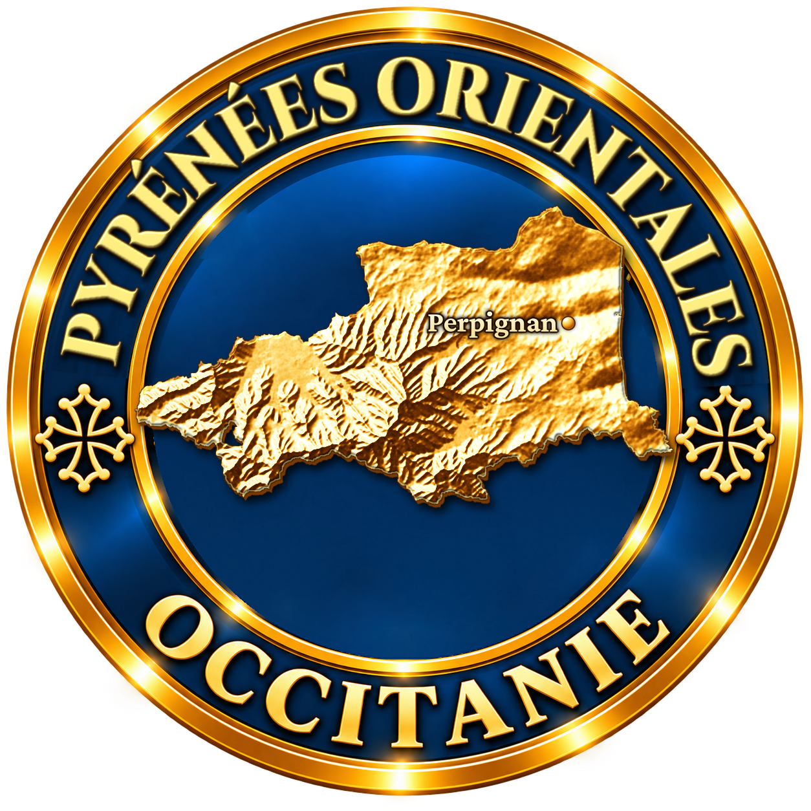
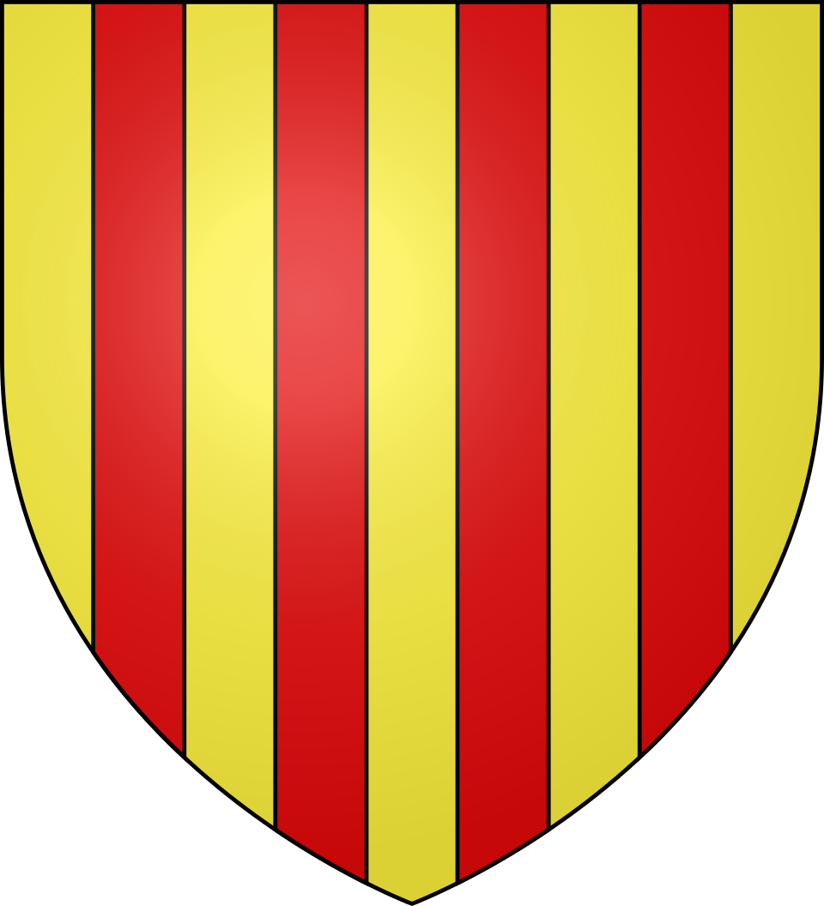
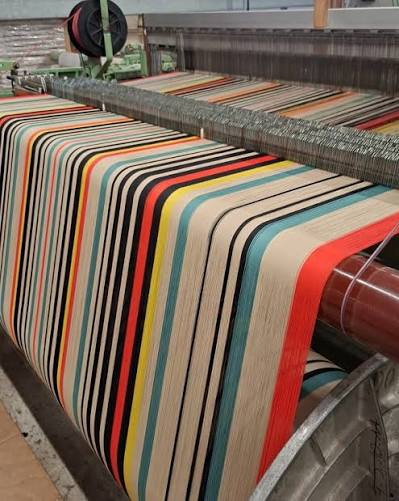

Une tradition textile enracinée dans le Haut Vallespir. Les toiles catalanes de Saint-Laurent-de-Cerdans s'inscrivent dans une histoire beaucoup plus large que celle d'un simple tissu décoratif. Dans les vallées pyrénéennes, filer, tisser et transformer les fibres ont longtemps constitué des activités complémentaires de l'agriculture. La disponibilité de l'eau, les échanges avec la Catalogne méridionale et l'existence d'une main-d'œuvre rompue aux métiers textiles préparent le terrain à l'industrialisation du XIXe siècle.
Un territoire de savoir-faire. Avant l'essor de la sandale, le Haut Vallespir connaît des activités drapières, métallurgiques et artisanales. Leur recul progressif au XIXe siècle libère des ouvriers et des compétences techniques. La position frontalière de Saint-Laurent-de-Cerdans favorise en parallèle la circulation des hommes, des capitaux, des modèles et des procédés entre les deux versants des Pyrénées. C'est dans ce contexte que le tissage local va se spécialiser dans les fournitures nécessaires à l'espadrille.
Vers 1860 : l'espadrille transforme le textile. L'introduction de l'industrie sandalière à Saint-Laurent-de-Cerdans vers 1860 bouleverse l'économie du village. Une espadrille exige deux produits essentiels : une toile résistante pour le dessus et une tresse végétale destinée à la semelle. Le développement rapide des ateliers de sandales crée donc une demande considérable en coton, lin, chanvre et jute et entraîne l'apparition d'établissements capables de préparer, tresser et tisser ces matières à grande échelle.

Sans et Garcerie, deux familles d'entrepreneurs. Dès les années 1870, les familles Sans et Garcerie se lancent séparément dans la fabrication de fournitures pour espadrilles. Joseph Sans et Abdon Garcerie s'associent en 1882. Ils disposent de réseaux catalans, de capitaux familiaux et d'une main-d'œuvre locale nombreuse. Leur entreprise produit principalement des toiles et des tresses qui alimentent les nombreux fabricants de sandales du village et des environs.
1895-1897 : naissance d'une grande manufacture. Les ateliers installés dans d'anciennes forges le long de la Quère deviennent rapidement trop exigus. Une nouvelle usine est construite en 1895 à la lisière de Saint-Laurent-de-Cerdans ; la manufacture Sans & Garcerie, dont Les Toiles du Soleil fait aujourd'hui remonter la fondation à 1897, rassemble les différentes étapes de production. Filage, ourdissage, tissage et tressage peuvent désormais être organisés dans un même ensemble industriel.
Une usine intégrée et mécanisée. Les matières premières — jute, chanvre, coton et lin — arrivent brutes et sont transformées sur place. La manufacture est équipée d'une machine à vapeur de 120 chevaux et d'un moteur à gaz de 40 chevaux. Au début du XXe siècle, son parc comprend environ 100 métiers à tisser et 350 métiers à tresses. Cette concentration de machines illustre l'ampleur prise par une activité qui, tout en reposant sur des gestes anciens, entre pleinement dans l'âge industriel.
Le tissage au cœur de l'âge d'or sandalière. Les toiles de Saint-Laurent ne sont d'abord pas conçues comme un produit de décoration : elles répondent aux besoins très concrets de l'espadrille. Les fabricants locaux vendent leurs chaussures aux viticulteurs, ouvriers agricoles et mineurs de nombreuses régions françaises, ainsi qu'aux marchés militaire et colonial. La croissance de ces débouchés entraîne celle des ateliers textiles. En 1912, Sans & Garcerie est le premier employeur de la commune avec environ 250 ouvriers.
Des métiers et des gestes très spécialisés. Le tissage suppose une longue préparation : bobinage du fil, cannetage, ourdissage — qui organise parallèlement les fils de chaîne — puis passage sur le métier, réglage des tensions et tissage proprement dit. La régularité des lisières, la densité de la toile et la précision des rayures dépendent autant du réglage des machines que de l'expérience des ouvriers. Ces compétences, transmises de génération en génération, constituent aujourd'hui l'une des richesses patrimoniales de la manufacture.
Les rayures catalanes. Avec le temps, les toiles rayées dépassent leur fonction première de fourniture industrielle. Les alternances de couleurs, les rythmes de bandes et la robustesse du tissage deviennent une signature visuelle. Le terme de toile « bayadère » désigne ces compositions de rayures multicolores. Leur identité ne tient pas à un motif unique et figé, mais à une culture de la couleur et du tissage qui permet de renouveler continuellement les dessins tout en conservant un caractère immédiatement reconnaissable.
Agrandissements et apogée. La manufacture connaît plusieurs campagnes d'agrandissement au cours de la première moitié du XXe siècle, notamment en 1905, 1920, 1940 et 1945. L'ensemble industriel accompagne ainsi la croissance puis les transformations de la production sandalière. Pendant des décennies, le bruit des métiers, le passage des ouvriers et la circulation des matières premières rythment une grande partie de la vie quotidienne de Saint-Laurent-de-Cerdans.
Les crises du XXe siècle. L'industrie de l'espadrille est touchée par une première crise importante dans les années 1930, puis par de nouvelles difficultés dans les années 1950. À partir des années 1960, l'activité de Sans & Garcerie décline fortement. Concurrence internationale, évolution de la chaussure, nouveaux matériaux et changements de consommation entraînent la fermeture de nombreux ateliers. Le textile local perd progressivement son principal débouché historique.
1993 : le sauvetage de la manufacture. Au moment où la disparition de l'activité paraît possible, Henri et Françoise Quinta, tous deux d'origine catalane, reprennent en 1993 l'entreprise et son parc de machines. Sans & Garcerie devient Les Toiles du Soleil. Les archives de l'ancienne maison — échantillons, références de tissus et documents accumulés pendant près d'un siècle — servent de mémoire et de source d'inspiration. Le tissage catalan est alors repositionné vers la décoration, le linge de maison et le tissu au mètre.
Des machines anciennes toujours productives. La singularité de la manufacture tient à la conservation et à l'utilisation de métiers historiques, notamment des métiers à navettes Diederichs. Contrairement à des machines plus récentes, ces métiers permettent de produire une lisière continue particulièrement solide et soignée. Ourdissoirs, cannetières, bobinoirs et métiers de différentes largeurs témoignent d'un patrimoine mécanique rare qui n'est pas seulement exposé : une partie de ces équipements continue de participer à la production.
De Saint-Laurent au monde. La relance des années 1990 donne aux rayures catalanes une nouvelle visibilité. Les collections voyagent bien au-delà du Vallespir et sont diffusées notamment en France, au Japon et aux États-Unis. Cette internationalisation ne signifie pas l'abandon du territoire : la création, le tissage et une partie de la confection restent associés à Saint-Laurent-de-Cerdans, où la manufacture constitue l'un des derniers témoins actifs de l'ancienne industrie textile locale.
Une reconnaissance patrimoniale. Le savoir-faire de la manufacture a été reconnu par le label d'État « Entreprise du Patrimoine Vivant », qui distingue des entreprises françaises possédant des savoir-faire artisanaux ou industriels d'excellence. L'Inventaire général du patrimoine culturel d'Occitanie étudie également l'ancienne usine Sans-et-Garcerie comme un élément majeur du patrimoine industriel des Pyrénées-Orientales. L'histoire du bâtiment, de ses machines et de ses ouvriers forme ainsi un ensemble patrimonial exceptionnel.
Un patrimoine vivant plutôt qu'un décor du passé. Les toiles catalanes actuelles sont l'aboutissement de plus d'un siècle d'adaptations : d'abord fourniture indispensable de l'espadrille, puis textile domestique et décoratif, elles ont survécu parce que le savoir-faire a su changer de marché sans renoncer à ses techniques essentielles. À Saint-Laurent-de-Cerdans, les rayures colorées racontent donc à la fois l'histoire industrielle du Haut Vallespir, la mémoire de générations d'ouvriers et la capacité d'un atelier ancien à continuer de produire au XXIe siècle.
Il était une fois un petit village du Haut Vallespir, une manufacture de tissage catalan.
— Les Toiles du SoleilLe tissage catalan s'est développé main dans la main avec l'essor de l'espadrille : à la fin du XIXe siècle, le petit village de Saint-Laurent-de-Cerdans tissait déjà la toile qui deviendrait, quelques décennies plus tard, l'un des emblèmes textiles du pays catalan.
Tisser pour exprimer nos racines catalanes en Haut Vallespir, pour faire vivre nos traditions.
— Françoise Quinta, Les Toiles du SoleilAujourd'hui encore, la fabrication relève d'un savoir-faire minutieux qui combine tradition et innovation, transmis entre générations d'artisans. Les sources les plus fiables pour se procurer une toile catalane authentique restent les ateliers du Vallespir eux-mêmes, où se croisent tisserands, boutiques d'usine et marchés artisanaux locaux.
Céret à une vingtaine de minutes, la « capitale de la cerise » est aussi la ville des peintres cubistes, avec son musée d'art moderne renommé.
Prats-de-Mollo-la-Preste cité fortifiée par Vauban au pied du Haut Vallespir, elle ouvre sur de belles randonnées vers le col du Miracle et une vue sur le Canigou.
Le massif du Canigou montagne sacrée des Catalans, il domine la vallée et attire chaque année marcheurs et pèlerins vers son sommet.
Amélie-les-Bains station thermale voisine nichée dans la vallée du Tech, réputée depuis l'Antiquité pour ses eaux chaudes.